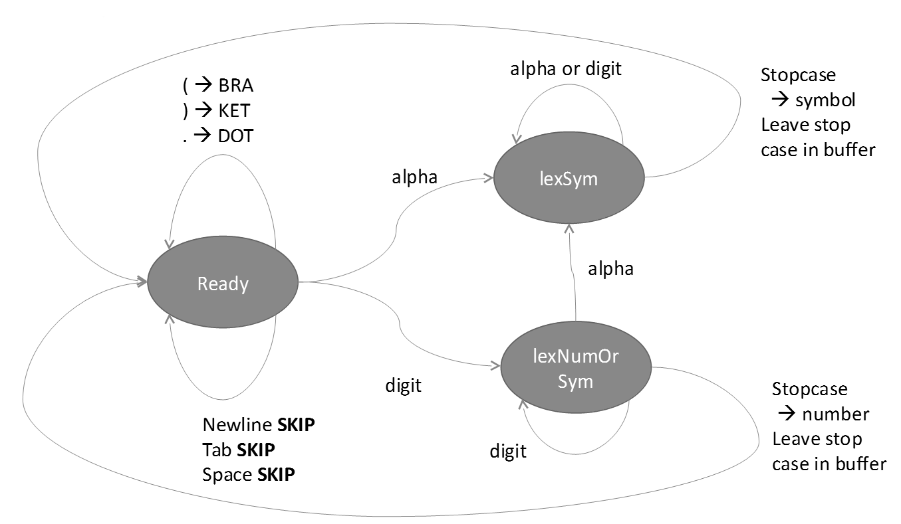

Functional Programming in F#
Part II — Lexers & Parsers
Steven Gilham
Based on material developed in collaboration with Will Harwood and Laurence Jordan and presented in 2008

|
Course Overview
|
Lexing and Parsing
A standard application of the techniques
|
|
Lexers and Parsers
|
A Simple Language – LISP
Syntax
NOT a LISP course in your FP course!
Expressions are of the form
(mult (add x 5) factor)
(bind ((x. 1) (y . 2) (z . 3)) (add x y z))
(defun append (x y)
(if (null x) y
(cons (head x) (append (tail x) y))))Lexer
Lexer takes character data and presents a stream of tokens
Parser
Parser takes the token stream and creates a syntax tree
Lexers
Basic Lexer
A state machine
String to character list
"abcde" -> [ 'a'; 'b'; 'c'; 'd'; 'e' ]
"abcde" [ 'a' ] "bcde" [ 'a'; 'b' ] "cde" ... [ 'a'; 'b'; 'c'; 'd'; 'e' ] "" |
|
Concept
If we had written
let rec toList i = … we would get the following from e.g i.Length
Lookup on object of indeterminate type based on information prior to this program point.
A type annotation may be needed prior to this program point to constrain the type of the object.
This may allow the lookup to be resolved.
= The type of i cannot be inferred.
Lexical classes
type lexical = BRA | KET | DOT | SYMATOM of char list | NUMATOM of int ;;
|
|
Recall
An Algebraic Data Type
enumon steroids- Can have many values
- Can associate data
- Are a type (with closed set of sub-types)
- Avoid the Primitive Obsession anti-pattern
Predicates
Test what we have found
| Is Member of List? | |
| Is Stopcase? | |
| Define digits | |
| Is Digit? | |
| Is Alpha? | |
Character list to integer
char → int | char list → int |
|---|---|
|
|
Component Lexers
| Symbol lexer | |
| Number or Symbol | |
The Complete Lexer
Assembling the pieces
|
|
Exercise 2.1
Write a lexer for .ica/.ini files (see also Exercise 2.3 below)
Parsers
The Language
Define the grammar it obeys
SEXPR = ATOM | BRA SEXPR DOT SEXPR KET | BRA SEXPR* KETATOM = SYMBOL | NUMBER- →
SEXPR = SYMBOL | NUMBER | ( SEXPR . SEXPR ) | ( SEXPR* )
Our Approach
Translate the grammar directly into a program by
- Creating elementary parsers for bra, ket, dot, symbols, atoms etc.
- Combining by sequence '>>', alternation '||' and iteration 'ITERATE'
let parseAtom s = ((parseSym >* ATOMACTION) || (parseNum >* ATOMACTION)) s ;;
let rec parseSEXPR s =
(parseAtom ||
(bra >> parseSEXPR >> dot >> parseSEXPR >> ket >* CONSPAIR) ||
(bra >> (ITERATE parseSEXPR) >* CONSLIST >> ket)
) s;;Concept
- Code references go up the file (bottom up)
- Grammars can reference down the file (top down)
Concept
- A parse state is the input yet to be parsed plus the results so far
- A parser takes a parse state, works on the input, and returns an updated state or a failure
Basic Parsers
| Capture the concept of success or failure | |
| A simple parser that takes a list of lexed items and either returns a new parse state or fails | |
| Example (mult 1 2) where '(' has been read... | |
Concept
Maybeis a standard pattern- Corresponds to the OO "null object" pattern
- So, no
nullor need fornull - Generalises e.g. Haskell-style
type Either = Left of 'error | Right of 'result - This is Separation of Concerns, FP style
Basic Parsers, continued
| Again, but for numbers | |
| Helper function for constants – a higher order parser that takes the token to match as a parameter | |
| Parsers for the lexical constants BRA, KET and DOT. | |
Concept
Partial function application
val parseConst :
x:'a -> s:('a list * 'b) Maybe -> ('a list * 'c list) Maybe
when 'a : equalityleads to
val bra : x:(lexical list * 'a) Maybe ->
(lexical list * 'b list) MaybeCombining Parser Primitives — Alternation
"Either X or Y"
Try f. If it fails, try g |
|
| Make it an infix | |
Combining Parser Primitives — Sequence
"After X then Y"
Try f. If it fails, the parse fails.If it succeeds, try g on the new parse state; if that fails, the parse fails. |
|
| Make it an infix | |
Combining Parser Primitives — Iteration
"As many X as are available"
Try f. If it fails, the parse is a no-op.If it succeeds, recurse on the new parse state. |
|
| Not an infix |
Exercise 2.2
Write the operator OPT such that OPT A matches zero or one occurrence of the parser A
Write the parser PLUS such that PLUS A matches one or more occurrences of A
Transforms
Transforms
This builds the syntax tree
The parsers only check the structure of the expression
We also want them to build an abstract structure corresponding to the string!
SEXPR = ATOM → ATOM-ACTION |
BRA SEXPR DOT SEXPR KET → PAIR-ACTION |
BRA SEXPR* KET → LIST-ACTION
ATOM = SYMBOL → SYMBOL-ACTION |
NUMBER → NUMBER-ACTIONTransforms take a parse state and build a parse state of a different type
(unparsed input, parse items list) -> (unparsed input, LISP Tree list)LISP trees are built from ATOM, NIL and CONS elements
Our Abstract Syntax Tree
type SEXPR = SYMBOL of char list | NUMBER of int | NIL | CONS of SEXPR * SEXPR ;;Transforms continued
Parse input using f,
then transform according to h. |
|
| Make it an infix | |
Grammar with Actions : A refinement
The representation we seek is
SEXPR = ATOM |
BRA SEXPR DOT SEXPR KET → CONSPAIR |
BRA SEXPR* → CONSLIST KET
ATOM = SYMBOL → ATOM-ACTION |
NUMBER → ATOM-ACTIONActions : From grammar to code
| CONSPAIR – produce a singleton list containing the CONS of the items. | |
| CONSLIST – produce a CONS representing a list | |
| ATOMACTION – translate base cases between data types | |
The Complete Parser
Recapitulating
let parseAtom s = ((parseSym >* ATOMACTION) || (parseNum >* ATOMACTION)) s ;;
let rec parseSEXPR s =
(parseAtom ||
(bra >> parseSEXPR >> dot >> parseSEXPR >> ket >* CONSPAIR) ||
(bra >> (ITERATE parseSEXPR) >* CONSLIST >> ket)
) s;;Wrapping the Parser
Building a usable API
let parse str =
let r = parseSEXPR (Return (lexer (toList str), []))
match r with
| Return(_ , result::_) -> result
| Return(_, []) -> NIL
| Fail -> NIL ;;Test Case
parse "( ((ABC)) . (123. 456))";;Result
val it : SEXPR =
CONS
(CONS (CONS (SYMBOL ['A'; 'B'; 'C'],NIL),NIL),CONS (NUMBER 123,NUMBER 456))Exercise 2.3a
Define a grammar
File = Line*
Line = WHITESPACE | CMD | 'NL'
WHITESPACE = ('NL' | 'TAB' | 'SPACE' )
CMD = SectionHeader | BINDING | COMMENT
SectionHeader = '[' HeaderString ']'
BINDING = BindString '=' BindString
HeaderString = Any but ('[' | ']' | 'NL')
BindString = Quote | Any but ('='| 'NL' )
Quote = '"' (Anything but '"') '"'
COMMENT = ';' (Any but 'NL') 'NL'
Exercise 2.3b
Write a Lexer for the grammar
Write a Parser for it
Extend it, using the full INI file format definition.